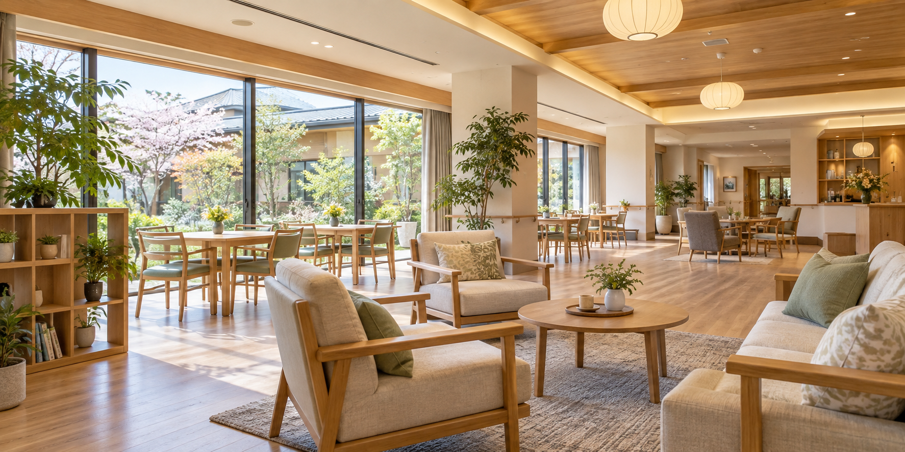

毎日の小さな選択を大切に。一人ひとりのペースに寄り添う暮らしを考えます。

好きなこと、慣れ親しんだ時間の過ごし方を大切に。ご本人とご家族の声を聞きながら、安心して過ごせる環境を考えます。
食卓を囲む時間を、毎日の楽しみに。
自分のペースで、落ち着けるひとときを。
家族や地域との関わりを大切に。
この施設は架空のため、所在地・費用・定員・サービス内容は設定していません。実際の施設サイトを制作する際は、確認済みの情報を掲載します。